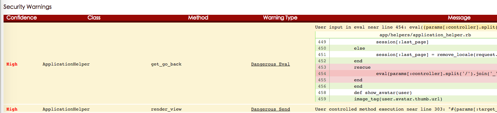

lsyncd一般用來同步備份資料夾，亦可以做到異機的同步，先下載安裝。
1
| |
安裝之後，一些目錄必須手動建立
1 2 | |
編輯lsyncd.conf.lua
1 2 3 4 5 6 7 8 9 10 11 12 13 14 15 16 | |
再到/var/log目錄下建立上述定義的檔名
1 2 3 | |
之後重啟服務
1
| |
同步狀態，可輸入查看
1
| |
1
| |
1 2 | |
1 2 3 4 5 6 7 8 9 10 11 12 13 14 15 16 | |
1 2 3 | |
1
| |
1
| |
Brakeman是一款專門面向Ruby on Rails應用程式的漏洞掃描工具，同時也針對程序中一部分數值向另一部分傳遞的流程執行數據流分析。無需安裝整套應用程式即可使用該軟體
1
| |
1 2 | |
1
| |

1
| |
1
| |
1
| |
1
| |
1
| |
1
| |
1 2 3 | |
step1
1 2 | |

step2:Start the server than go to localhost:9200 .You should see some code
step3:Add searchkick to models you want to search.

step4:Add data to the search index.
Product.reindex
rake searchkick:reindex CLASS=Movie
For instance
rake searchkick:reindex CLASS=Movie
1 2 3 4 5 6 | |
1 2 3 4 5 6 7 | |
step1:copy jqerty.raty.js and image of star to [javascript] [image]
step2: view
div class="star-rating" data-score= "xx">
paste the following code:
1
2
3
4
5
6
7
8
9
<script>
$('.star-rating').raty ({
path: '/assets/',
readOnly: true,
score: function() {
return $(this).attr('data-score');
}
});
</script>
step3: form for example:
1 2 3 4 5 6 7 8 9 10 11 12 13 14 15 16 17 18 | |
http://aws.amazon.com/tw/free/
1.點選左上方的services選擇EC2服務：

2.選擇機房位置，可以選台灣連線速度最佳的日本Tokyo或新加坡Singapore

<
3.選完地區後，點選左側Instance再點選Launch Instance進入建立主機的步驟：

4.選擇你要的作業系統，這裡我選Ubuntu Server 12.04.3 LTS

5.主機類型Instance Type請選擇免費的T2.micro

6.其它步驟可忽略直接跳過，直接進入設定防火牆的確認，請確認SSH有開放，之後才能登入

7.最後確認主機沒問題後點選Launch啟動主機：

8.接著會彈出一個視窗，請選擇Create a new key pair，然後隨意輸入一個名字在Key pair name 欄位，接著點選Download Key Pair，將下載的key收好，待會要用這把key登入你的主機，下載完後點選 Launch Instance啟動主機：

1.點選剛剛建立完成的主機，找到Public IP把它複製下來

2.開啟終端機，輸入
1
| |
3.UNPROTECTED PRIVATE KEY FILE，初次使用 Key Pair 登入 EC2 可能會遇到這個警告
通常是因為這個鑰匙檔的權限太過於公開

輸入以下可以解決
1
| |
ssh/id_rsa.pub內容 加到server下 authorized_keys 之後就不用輸入key
Asset Pipeline 提供了內建直接使用 Sass 撰寫 CSS 的功能。你也許會生出這樣的疑惑：什麼是 Sass？ Why should I care?
Sass (Syntactically Awesome Stylesheets) 原先是內建在 Haml 中的一個副功能。
要談 Sass，就不得不先來談 Haml 這個 project。 Haml 全名為 HTML Abstract Markup Language，它是提供網頁設計師撰寫 HTML 的另外一條途徑。
透過 Haml，你可以很快的使用它的 syntax 寫出結構穩固的 HTML。
網頁設計師經常有一個煩惱：在撰寫 HTML 時要是忘記關一個 TAG，在瀏覽器中整個版面可能就會大爆炸，而這樣的 Bug 卻是很難被抓出來的。
Haml 主要就是讓開發者，能夠使用縮排的方式撰寫 HTML，輕鬆做到永不忘記關 Tag 的效果。以下是 Haml 範例：
1
| |
產生出來的 HTML 就會長這樣
1
| |
而
1 2 3 4 | |
會產生出來這樣的 HTML
1 2 3 4 5 | |
Haml 是需要使用縮排撰寫，再行 compile 的 markup language。它可以讓你：
只要 syntax 一錯誤，編譯就無法成功。利用這樣的特性，很容易阻絕寫出會在瀏覽器因為 TAG 結構錯誤而難以 debug 出的 HTML。
在網頁設計開發階段，若要大幅調整 HTML 結構，對網頁設計師也是很傷腦筋的一件事。因為大幅的搬動 HTML，通常有時候會造成：「少剪到一個 TAG」或 「改了開頭 TAG ，卻忘了改關閉 TAG 」的憾事。
在 Haml 中，這些狀況都不會發生。因為 Haml 本身就屬於「塊狀結構」、「自我 close」。因此不論怎樣搬動和調整，只要符合縮排，幾乎都不會爆炸。
如此 powerful 的 markup language 為何沒有風行？反倒是原先屬於副功能的 Sass 大紅特紅。原因就在於 Haml 的特性：不只需要被機器 compile，它也需要被人腦 compile。
HTML 本身就是一門相當直觀的 markup language。在撰寫 Haml 時，排版雖然相當輕鬆。但接手維護 Haml 版面的人，卻通常痛苦不堪。因為「非常不直觀」。
這也是 Haml 的反對者，批評最力的地方。
多數人無法接受維護不直觀的「任何東西」，加上撰寫 Haml 需要另外學習特殊的 syntax。沒有壓倒性的好處，一般人是不會貿然進行技術投資的。這也是為什麼 Haml 始終處是小眾技術的主要原因。
拉回來談 Sass，Sass 原先是附屬在 Haml 裡面的一個副功能。這也是 sass-convert 這個指令必須要安裝 haml 這個 gem 才能使用的原因。
Sass 的原理，是讓開發者可以透過「縮排」的方式去撰寫維護 CSS，同樣可以避免忘記關 TAG 而大爆炸的糗事。
而因為 CSS 的結構特性，造成了 Sass 與 Haml 截然不同的命運。多數人反對 Haml，是因為 Haml 反而造成了 HTML 在閱讀上的不直觀。
而 Sass 的語法
1 2 3 4 | |
產生出
1 2 3 4 5 6 | |
反倒讓 CSS 的維護變得直觀了。接觸 Sass / SCSS 後的不少開發者甚至認為，縮排 block 的撰寫方式才是 CSS 在被發明時應該被設計出來的樣子。
現在撰寫 CSS 的方式，有一個絕大缺點：只要在結構上涉及巢狀或多個 class，維護者就必須複製貼上 style。不少人認為這真是愚蠢至極且煩人透頂的設計。
其他便利功能
Sass 也提供了其他便利功能，如變數、函數、數學、繼承、mixin …等等功能。
在進行網頁 protyping 時，更改全站配色或者是直接提供兩個以上的設計，對設計師來說是家常便飯的事。
但更改全站配色卻是相當麻煩的一件事，因為「尋找 + 全數取代」，並不能保證最後會有正確的結果。很有可能：你更改了所有 CSS 中涉及連結的顏色，卻發現在全數取代的過程中，不小心也改到邊框的顏色。
若能使用變數去指定特定 style 的顏色，該有多好。
變數 ( Variables )
1 2 3 4 5 6 | |
生成
1 2 | |
數學
在調整區塊寬度時，你也希望：每次調整寬度時，可不可以不要每次都按計算機，再全數手動修改…
1 2 | |
生成
1 2 | |
內建函式
在調整顏色亮度時，你希望可否無需再開調色盤，直接改 CSS 就讓 style 暗一點？
1 2 3 | |
生成
1
| |
這都還只是 Sass 所提供的當中一小部分基礎功能而已，卻足以讓網頁設計師驚艷十足了。加上撰寫維護時十分直觀，這也難怪為何 Sass 只是 Haml 中的副功能，後繼的聲勢浪頭卻遠高於 Haml 本身。
SCSS
那 SCSS 又與 Sass 有什麼差別，他們看起來好像是類似的東西？
是這樣的，Sass 原先使用的縮排，對於網頁設計師來說，還是相當不直觀。而且實務上也不能直接將舊有的 CSS 直接貼進 Sass 中。其實還是存在一定的不方便度。也因此 Sass 進行了進化，改良了 syntax，而 Sass 3 後來就被稱為 SCSS ( Sassy CSS)。
它的 syntax 與 CSS 原有的 syntax 完全 compatible，使用了 { } 去取代原先的縮排方式。
比如說原有的
1 2 3 4 | |
在 SCSS 中變成了
1 2 3 4 | |
在撰寫上，更加無比的直觀，同時也能將舊有的 CSS 直接貼進去，完全沒問題！SCSS 更新增了不少關於 CSS3 的 feature 函式。
就拿我最愛的背景漸變色來說好了，原先要做漸變色，CSS 必須要這樣寫：
1 2 3 4 5 6 7 8 | |
因為你必須支援所有的 Browser。
但在 SCSS 中，一行就搞定了！
1
| |
Ruby 在邏輯控制的部份，除了提供 if 還提供了 unless。
unless 等於 「if not something 」等於 「if !something」。
不過雖說 Ruby 提供了 unless 這個用法，但在實務上來說，一般還是不太推薦使用 unless。除了以下幾種狀況：
當語意較適合時，使用 unless
1 2 3 | |
沒有 else 的時候，使用 unless
當沒有 else 的時候，看起來還算 OK
1 2 3 | |
但加上一個 else，看起來就不是那麼直觀了
1 2 3 4 5 | |
如果專案當中有這樣的 code，相信我，換成 if 的陳述會直觀許多。
1 2 3 4 5 | |
當只有一個條件時，使用 unless 很適合。但多個條件時，使用 unless 很糟糕。
1 2 3 | |
相同的，改成 if 也會直觀許多
1 2 3 | |
在 controller 裡面的 method 不能在 view 裡面用。
也就是在
1 2 3 4 5 | |
View 裡面不能用
1
| |
拉這個 cart 出來直接用。
如果你要在 controller 和 view 都能拉現在的購物車，必須要用 helper_method 宣告這是一個 controller 級的 helper。
1 2 3 4 5 6 7 | |
這樣你就能在 View 裡面用 current_cart。
<%= current_cart.items %> 或者是 Controller 裡面也能用 current_cart。
1 2 3 4 5 | |
view_context
在 helper 裡面的 method 不能在 controller 裡面用。 也就是在
1 2 3 4 5 | |
是不會動的。
如果要在 controller 裡面取用系統內建的 Rails View Helper，或自定義的 View Helper。 必須要用 view_context 去調用。
1 2 3 4 5 | |
但基本上還是建議在 View Helper 與 Controller 的 code 不要互相混來呼叫來呼叫去。讓 View 歸 View，Controller 歸 Controller。若真有業務上的需求需要「到處都可以用」。建議寫 Module 掛在 lib 用 mixin 技巧混入。